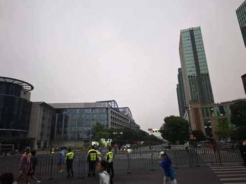
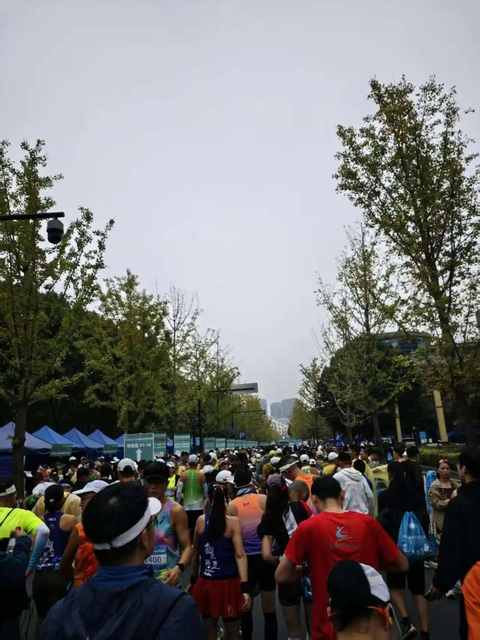
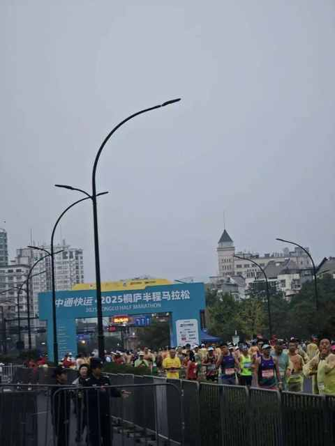
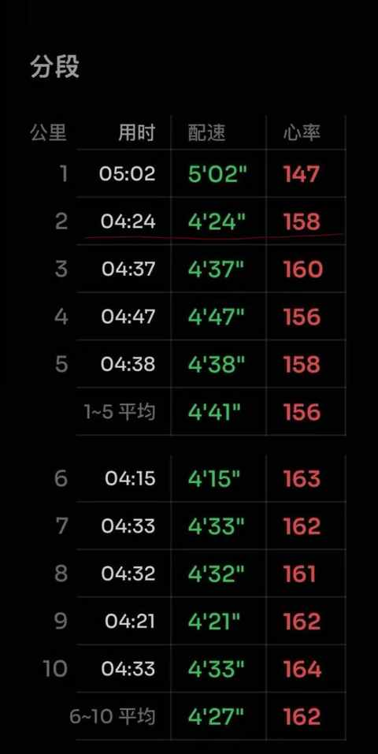
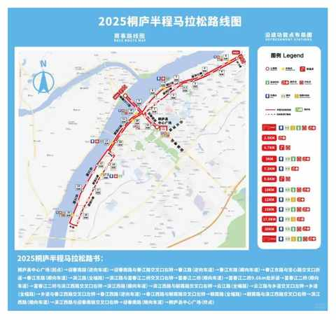
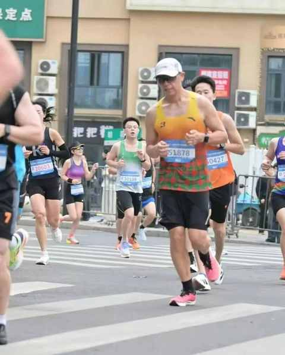
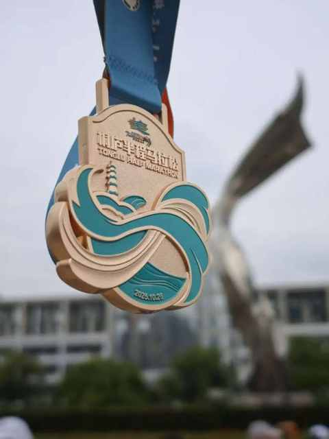
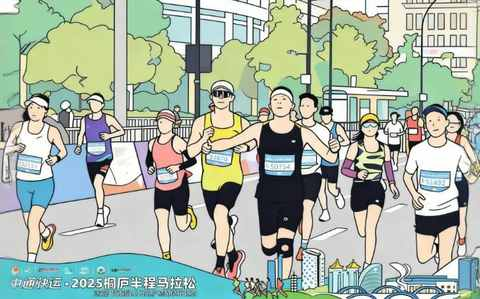

一个中年人的2025年桐庐半马赛后复盘：我的 5 个收获
一、比赛大不一样
从氛围到赛道，再到装备之类的都和平时日常跑步大不一样。



比赛的时候不仅能遇到各种各样的选手，同时也能对日常练习成果做检测。
基本上到 15km 左右也就能知道当天能出什么样的成绩，周围的选手也会越来越趋于稳定，大概率也会和这一波人一起抵达终点。
从这个角度来看，如果你也长期跑步，那确实很适合每年参加 1-2 场比赛：10km、半马、全马、越野赛都值得一试。
二、直面先发优势
有许多选手跑在你前面的路上，最核心的原因不是因为他们跑的比你快，是他们的分区在你前面，你比他们延后 10 分钟发枪。
在你跑过第一个计时点的时候，他们已经跑了 10 多分钟，至少也跑了有 2km，跑的快的都有 3km 咯。
这个时候必须直面先发的相对优势和后发的相对劣势！要在逐步提速的同时，连续穿越人流，尽全力跑到前面去。
如果不穿过人流，那只能被动的按照旁边的人的配速来往前移动，可能完全不是你的比赛节奏，再长时间节奏不匹配极大的可能是后面想快也快不起来了。
后发也是有好的地方的，前期不容易冲的太猛导致后半程容易乏力和掉速，这样也就更难达成既定的完赛目标。

三、充分准备很重要
赛前有很努力的练习，甚至在老婆的班主席提前一周跑了一个半马测速，以便充分了解自身当下的运动水平。
维度没有仔细研究赛道安排，可能也是经验不足的原因，不知道对赛道有所了解的重要性，只要对赛道有一定了解的情况下才能更好的把握自己的节奏。

在突围的过程中，2km 的时候顺利把配速提了上来，但当时看到左侧已经有大量折返的选手过来。
误以为前面很快就是折返点就没有再维持这个速度去突围，又跑了 2km 才发现折返点还早再继续又加速突围。

这就是很明显的准备不足，看了赛道图但约等于没有看。
后面再看的时候会记住每个折返点的公里数是多少，这样对照着手表的跑动距离能提前准备调整速度和位置。
四、想有照片就得吸引到摄影师
去年参加过一次小型半马和一次 10km 比赛，都能在组委会提供的云相册中找到自己的多张单人照。
这次比赛没有一张单人照，下面这张是中其中一张中截图的。

由于过于想 PB，看到摄影师完全不敏感和不兴奋。
在找照片的时候思来想去，才发觉有两件事很重要的事没有做：
① 跑到有利的拍摄位置
② 做各种利好出片的动作
跑的很快的选手是没有这个烦恼的，他们遥遥领先，在路过拍摄点的时候摄影师都会抓拍他们。
五、完成比完美更重要
跑步比赛只要顺利完赛便能获得一块沉甸甸的完赛奖牌。

不过，现在很多赛事主办方不仅会提供完赛奖牌，同时也会提供对于成绩达标选手的额外奖励。
在跑到 18km 处的时候，遇到有两位选手正在工作人员的帮助下寻求救援，能看出来意识是清醒的但很难站起身。
每次看到类似这种情况的时候，都希望他们的身体无碍，同时也提醒自己要量力而行，安全第一。
在遇到心率过高和突然乏力情况的时候要赶靠边，紧接着降速观察身体的反应，等待状态恢复再继续往前跑。
安全完赛不只是一句口号，也得时刻谨记于心并落实到心动中。

希望大家在后面所有的比赛中，都安全的奔赴终点，健健康康跑到 100 岁！